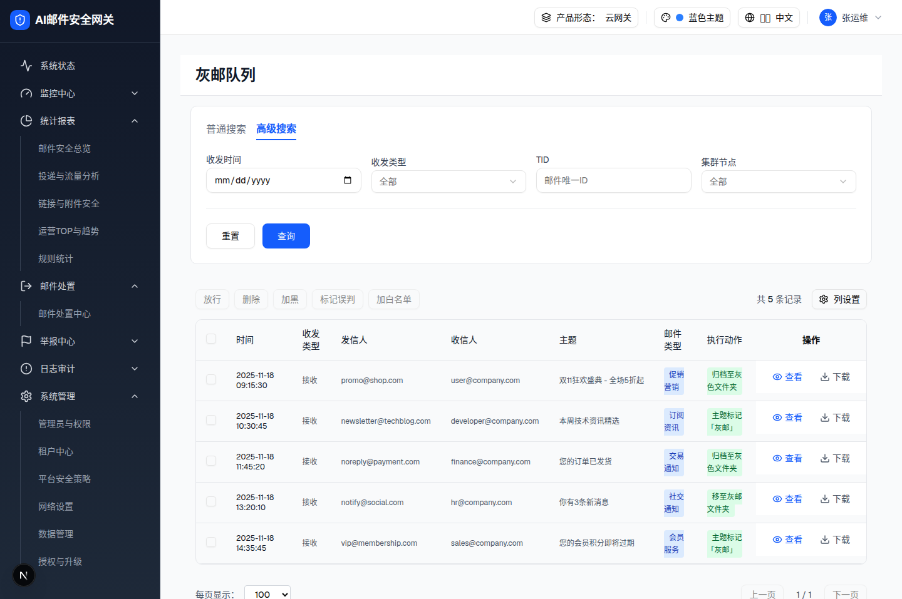

| 所属组件 | 2.1 查询筛选区 GreyMailSearchFilters |
| 主文件 | index.html |
| 触发路径 | 层级0 → 点击"高级搜索"Tab → onModeChange("advanced") |
| demo 组件 | grey-mail-search-filters.tsx（mode==="advanced" 分支） |
从 demo advanced 态提取的真实 HTML；输入框可键入。

| 序号 | 元素 | 标签 | 占位/默认 | 选项 |
|---|---|---|---|---|
| 1 | Input(date) | 收发时间 | yyyy/mm/dd | - |
| 2 | Select | 收发类型 | 全部 | 全部/接收/外发/域内 |
| 3 | Input | TID | 邮件唯一ID | - |
| 4 | Select | 集群节点 | 全部 | 全部/Node 1/Node 2 |
| 5 | Button | 重置 | - | handleReset |
| 6 | Button(primary) | 查询 | - | onSearch |
| 比对项 | demo 实际 DOM | 提取的 HTML | 是否一致 |
|---|---|---|---|
| 根节点 | div.bg-white.rounded-lg.border.mx-4.my-4 | 同 | ✅ |
| 直接子节点数 | 3（Tab行+字段网格+按钮行） | 3 | ✅ |
| 字段数 | 4 | 4 | ✅ |
| nodeCount | 26 | 26 | ✅ |
| 条件组渲染 | 无（conditionGroups state 存在但未渲染） | 未包含 | ✅ |